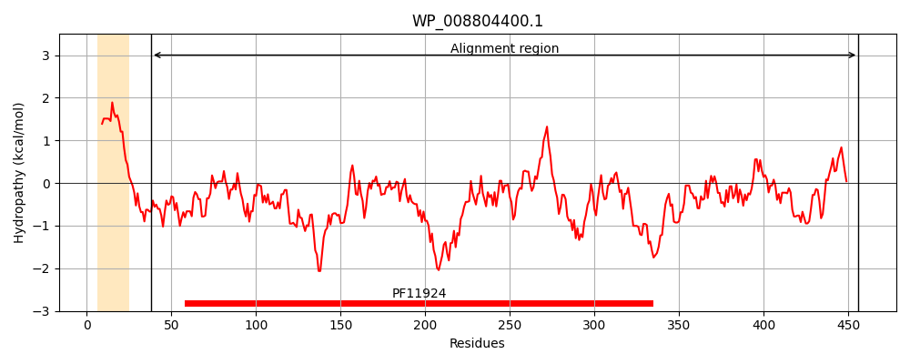
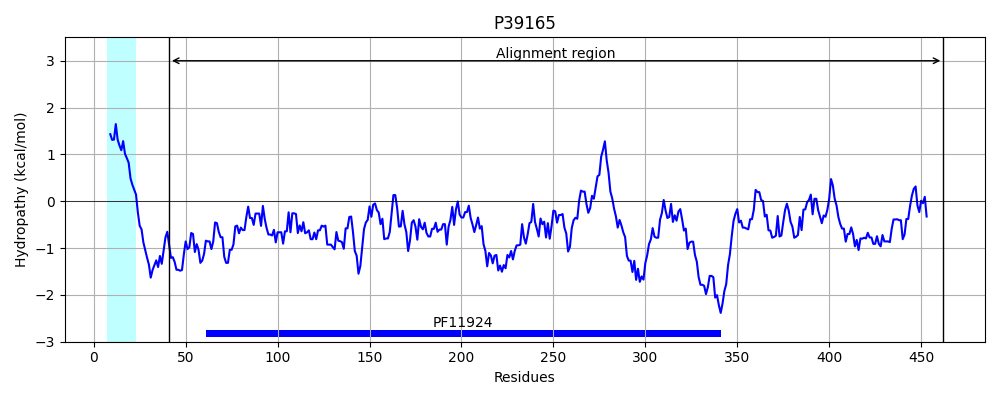
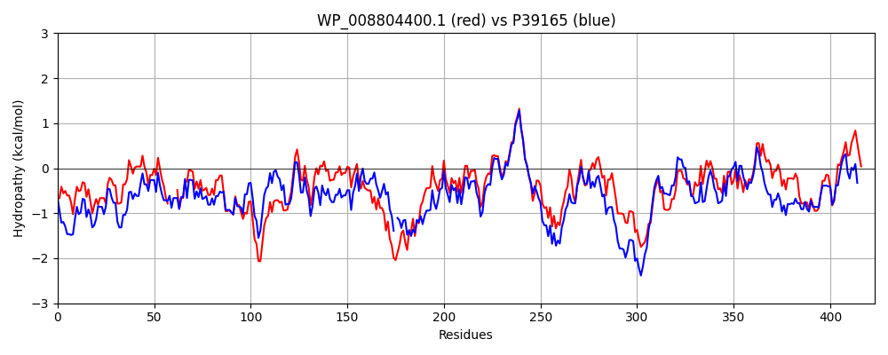

Hit Accession: P39165
Hit TCID: 1.B.54.1.9
Hit Description: gnl|BL_ORD_ID|10242 gnl|TC-DB|P39165|1.B.54.1.9 Uncharacterized protein YchO OS=Escherichia coli (strain K12) GN=ychO PE=3 SV=3
Mach Len: 423
e:0.000000
Query TMS Count : 1
Hit TMS Count: 1
TMS-Overlap Score: 0.750000
Predicted Substrates:CHEBI:25367;molecule
BLAST Alignment:
Score: 1540 , Bit scores: 597 bits, E-value: 0.0e+00, Alignment length: 423, Percentage identity: 67
Query: 38 DPLPDMGIAPQVDDDARHFAEVAKKFGEASMSDNGLTAGEQAQLFAISKIGNEVSHQL----ESWLSPWGNANVDLLVDKEGKFTGSKGSWFVPLQDNDRYLTWNQYSVTRRENDLVGNIGLGQRWRVGGWLLGYNSFYDKVLSESLARGSVGAEAWGEYLRLSANYYHPLGDWQLRDNQTQEQRMAAGYDVTAQARLPFYQHINTSVSVEQYFGDSVDLFHTGTGYHNPVAVSVGLNYTPVPLVTVTAKHKQGENGVSQNNVGLKLNYRFGVPLKQQLAADEVAISNSLRGSRFDSPERDNLPVVEYRQRKNLTVYLATPPWDLQSGETVQLKLQIHSLHGIKALHWQGDTQALSLTPPVDASSADGWSVIMPVWNSEPGAANRWRLSVVVEDKQGQRVSSNEIALALTEPLVKFTTPGVSW 456
D LPD+G+AP+ D +HFAE+ K FGE SM+DNGL GEQA+ FA+ K+ + +S Q+ ESWLSPWGNA+VD+ VD EG FTGS+GSWFVPLQDNDRYLTW+Q +T+++N LV N+G+GQRW G WL+GYN+FYD +L E+L R GAEAWGEYLRLSAN+Y P W TQEQRMA GYD+TA+ R+PFYQH+NTSVS+EQYFGD VDLF++GTGYHNPVA+S+GLNYTPVPLVTVTA+HKQGE+G +QNN+GL LNYRFGVPLK+QL+A EVA S SLRGSR+D+P+R+NLP +EYRQRK LTV+LATPPWDL+ GETV LKLQI S +GI+ L WQGDTQ LSLTP A+SA+GW++IMP W + GA+N WRLSVVVED QGQRVSSNEI L L EP + + W
Sbjct: 41 DGLPDLGMAPENHDGEKHFAEIVKDFGETSMNDNGLDTGEQAKAFALGKVRDALSQQVNQHVESWLSPWGNASVDVKVDNEGHFTGSRGSWFVPLQDNDRYLTWSQLGLTQQDNGLVSNVGVGQRWARGNWLVGYNTFYDNLLDENLQRAGFGAEAWGEYLRLSANFYQPFAAWH-EQTATQEQRMARGYDLTARMRMPFYQHLNTSVSLEQYFGDRVDLFNSGTGYHNPVALSLGLNYTPVPLVTVTAQHKQGESGENQNNLGLNLNYRFGVPLKKQLSAGEVAESQSLRGSRYDNPQRNNLPTLEYRQRKTLTVFLATPPWDLKPGETVPLKLQIRSRYGIRQLIWQGDTQILSLTPGAQANSAEGWTLIMPDWQNGEGASNHWRLSVVVEDNQGQRVSSNEITLTLVEPFDALSNDELRW 462 | Protein Hydropathy Plots: |
|---|
|  |  |
Pairwise Alignment-Hydropathy Plot:
|
|---|
|  |